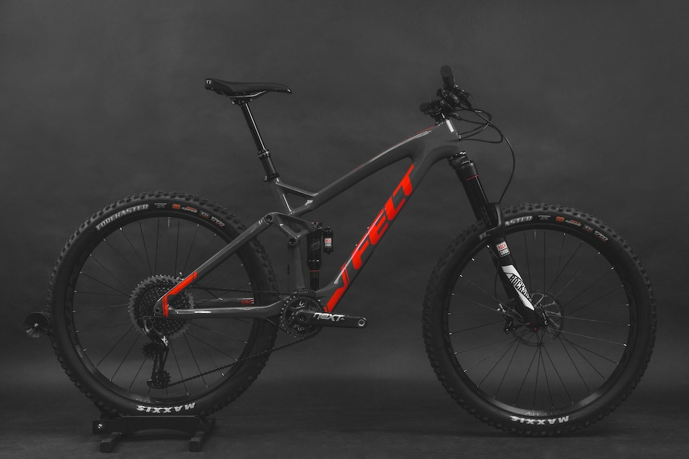

Yeti is a brand that needs little introduction, it's been home to some of the most famous racers of all time. The brand is well known for signing up and coming American racers, and they've stayed true to form with the Yeti Fox Shox Enduro Team. Get to know the team as they talk life on the road, racing and what it's like to have two times world champion Richie Rude as your mentor and teammate.
Felt Bicycles Joins the Direct Sales Movement

In a press release launched on BRAIN today, Felt Bicycles announced a hybrid direct-to-customer marketing program, with a twist. Online buyers will be able to click on a "Buy Local Now" link to check stock and purchase their bike remotely from the shop, or choose to buy directly from Felt. Either way, the bike will arrive at the nearest Felt dealer for assembly, and afterwards be delivered to the customer's doorstep.
Felt plans to credit the participating retailer with a commission for any online sale they deliver and, also, all online sales will count against that dealer's annual quotas or pre-season orders.
Felt international sales manager Tyler Meyers, who reportedly assisted Felt in preparation for the Customer Connect roll-out, told BRAIN:
bigquotes Customers vote with their dollars. The fact [is] that they're researching the product online, and if they choose to purchase it online, we don't want to say, 'You can't.' We want to have a program and operational support to deliver the bike consistent with their expectation.
...It's removing barriers to access, but also saying, 'We want you to work with the retailer because that's where you get the best fit, or if you have questions or need service.'
Felt's entry into consumer-direct, online sales marks another influential brand that has come to terms with the fact that online buyers are here to stay. The question is: "Does Felt's dealer-delivered strategy offer adequate insulation from retail pressure to keep online buyers comfortable?" Trek has dabbled in dealer-linked online sales with some success. Felt's Customer Connect is more aggressive than Trek's, but falls short of Intense's new customer-direct model.
Time will soon weed out the winners, but we can be sure that Felt's bid will be closely watched by every other brand that is heavily invested in brick and mortar stores.
Who Does Yeti Sponsor For Enduro? - Video
Winning the rainbows stripes isn't a bad way to end your first year as a fully supported rider. Watch as Miranda reflects on how her season unfolded, life in Squamish, BC, and what lies ahead.
Felt Bicycles Joins the Direct Sales Movement
Last summer I decided to book a holiday with Richard Williams, a guide I had met when he was working in northern Italy with Riviera Bike. Richard has now set up his own company, Ridgeline, deep in the Tuscan hills above Pisa. I had been promising myself a trip there for a couple of years since he set up there and finally got it sorted this summer. Even better I managed to persuade 10 of my riding buddies to come along with me, including Paul who flew in all the way from LA just for the trip.
To be fair it wasn't difficult to persuade them to come after showing them the pictures of the trails, food and scenery on Richard's website. The pressure was on Richard to produce an unforgettable holiday.